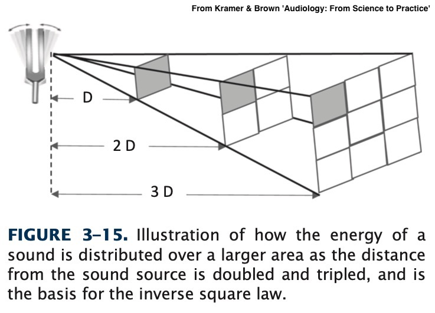
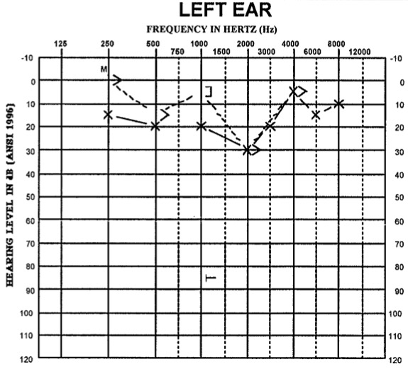

### Exam Accommodations folks, talk to me now! - Midterm is next week! - Study guide is online, as is a sample of what the exam's format will look like. See <https://savethevowels.org/docs/l113_studyguide.html> - 41 questions, fill-in-the-blank and short answer, given in 50 minutes. - I reserve the right to 'curve' the exam or not, as seems appropriate based on the grade distribution --- # Amplitude and Decibels ### Will Styler - LIGN 113 --- ### Today's Plan - Filtering - Measuring Sound Pressure - Distance and Pressure - Units for measuring pressure - Decibels - Amplitude related hearing damage! --- # Filtering --- ### We're just going to give you four terms - **High Pass** - "Let frequencies higher than this pass" - **Low Pass** - "Let frequencies lower than this pass" - **Band Pass** - "Let frequencies in this band pass" - **Band Stop** (also 'Band Reject' and 'Notch') - "Let only frequencies outside this band pass" --- <img class="r-stretch" src="phonmedia/filtering.jpg">"> --- ### Filters aren't perfect - They always have a 'cutoff' and a 'slope' - Your book calls slope 'rejection rate', but you'll also hear 'roll-off' - The slope dictates how quickly sounds outside the cutoff are attenuated - **There's no such thing as a perfect filter** - Where the slope is vertical --- ### Filtering is important! - It's a part of lots of hearing aids' and CIs' processing - We can model hearing loss by filtering - It's a basic component of signal processing --- ### ... and now, for something completely different --- ### Now we've talked about all the basic properties of sounds - As well as the process of combining them and modifying them - Now, how should we measure that Y-axis anyways? --- # Amplitude --- ### Sound Amplitude is pressure <img class="r-stretch" src="phonmedia/sound_diagram.jpg"> - Greater compression, greater amplitude --- ## Measuring Sound Pressure --- ## Where do we measure on the wave? <img class="r-stretch" src="phonmedia/200Hz.jpg"> --- <img class="r-stretch" src="phonmedia/noisewaveform.jpg"> --- <img class="r-stretch" src="phonmedia/amplitude_rms.jpg"> --- ### We use Root-Mean-Square Amplitude - Eliminates asymmetry between up and down - Takes the mean amplitude for the sound overall! - This captures the fact that sounds often vary in amplitude! --- ## How far away do I measure from? --- ### Distance matters!  - If the distance from the source is doubled, pressure is cut in half! --- ### There's a bit more to it than this! - Moving the medium damps sound independently of this - Lower frequencies are damped less in air, hence seeming to 'travel' farther - Vertical differences in air temperature can 'bend' sound up and down - When the air is warmer near the ground, sound bends upwards --- ### We know this to be true! - Distant sounds are quieter - You don't feel the pressure bursts from distant fireworks - There is a 'safe distance' from an explosion --- ### Amplitude measures without distances are meaningless <img class="r-stretch" src="hearing/amplitude_75dblimit.jpg"> --- ### Amplitude measures without distances are meaningless - Anything's safe for hearing if you're far enough away - "Just grab their measurement device and walk 'til it's legal" - So, it's critical to give amplitudes with a distance - "20 Pascal at 1 meter" - "... measured at 90dB at 2 meters from the source" - "Less than 50dB at the property boundary" --- ## OK, so what units should we use? --- ### Let's start with a simple unit - **Pascal** - Newtons per square meter - Where a newton is the force required to move a kilogram 1 meter per second per second --- ### What's zero sound pressure? - Nothing really is - Quietest places on Earth (anechoic chambers) are ~1.9x10<sup>-6</sup> Pascal - The quietest 1kHz sound we can hear is 2.00×10<sup>−5</sup> Pascal - **We're humans, so we're choosing the human audibility threshold as 'zero'** --- ### What's the maximum pressure? - The Planck Pressure? - The highest possible force in the smallest possible area - 4.63309*10<sup>113</sup> Pascal - In Earth's atmosphere, the loudest possible waves are around 1.01x10<sup>5</sup> (101000) Pascal - Humans experience pain in the 200 Pascal Range - Humans experience long term hearing damage > 0.36 Pascal --- ### So our range as humans is... - 200 Pascal highest tolerable sound with pain - 63 Pascal for a trumpet half a meter away - 20 Pascal can cause instant hearing damage - 2 Pascal for a jackhammer a meter away - 0.36 Pascal causes hearing damage over long term exposure - 0.02 Pascal for a home TV a meter away - 0.002 for conversation - 0.00002 Pascal lowest detectable sound by humans --- <img class="r-stretch" src="humorimg/side_eye_chloe.jpg"> --- ## That's kind of awful - Most of the scale is used for 'too damned loud' - Any time you're using 0.00002, you're going to make mistakes --- ## Enter the Decibel! - Decibels are logarithmic - We'll use dB SPL (Sound Pressure Level) - We use a reference value of 0.00002 Pascal - The lowest audible amplitude --- ### dB SPL can be calculated from Pascal - dB = 20*log10(Pascal/0.00002) - log10 is NOT the same thing as log or ln! - This will mess up your homeworks! <img class="r-stretch" src="phonmedia/dB_vs_pascal.jpg"> --- ### So our range as humans is... - 140dB highest tolerable sound with pain - 130dB for a trumpet half a meter away - 120dB can cause hearing damage instantly - 100dB for a jackhammer a meter away - 85dB causes hearing damage over long term exposure - 60dB for a home TV a meter away - 20dB for conversation - 0dB lowest detectable sound by humans - -20dB Anechoic Chamber Quiet --- ### Yes, dB can be negative! - Remember, 0 is our threshold for hearing! - ... and we're not all that good at hearing quiet things --- ## Decibels and Damage --- ### High Amplitude sounds cause hearing damage! - 180+dB can break the TM and/or dislocate the ossicles - Sounds over 132dB can rip the organ of corti off the basilar membrane - Long term high amplitude sounds damage the stereocilia and can cause cell death --- ### What are the 'safe' levels? - [Let's Ask ASHA](https://www.asha.org/public/hearing/loud-noise-dangers/) - The American Speech Language Hearing Association --- ### What are 'safe' levels? - < 70 dB is *absolutely fine!* - 70-85 dB is fine *in short doses < 8 hours* - 85+ dB has the safe exposure time cut in half per 3 dB - So 91 dB is OK for only 2 hours - OSHA requires hearing protection for anything over 90 dB - Over 120dB is **not safe for any amount of time** - This is *instant damage!* --- ### Instant Damage Sounds - 140-190dB for a gunshot, firecracker, artillery, nearby fireworks - 150dB for Jet Engines and firecrackers and dynamite blasts - Over 130dB causes **immediate pain!** - 130dB for auto racing, jackhammers - Over 120dB can cause **instant hearing damage** - 110-120dB is thunder, stadia, chainsaws - Most rock concerts are 110-120dB! --- ### Gradually damaging sounds - 105+ dB for unmuffled motorcycles - 90-100dB is very possible with headphones and background noise - 80-90dB is common on busy streets and in subways - Restaurants can easily reach 90dB - 85dB can cause damage with long-term exposure - Blenders, Smoke Alarms, Hand Saws, and Machining tools can easily be in this range! --- ### Acoustical laws! - In San Diego... - Residential Zoned Areas have a limit of 60 dB at the property line - Commercial Zoned Areas have a limit of 65 dB at the property line - Industrial Zoned Areas have a limit of 75 dB at the property line - California limits motorcycles to 80dB (modern) and 92dB (pre-1970) - California law limits vehicle noise to 95dB - **Both motorcycles and cars are measured at 50 feet from centerline of travel!** - *This presentation does not constitute legal advice* --- ### OSHA Requirements - [OSHA has standards for noise exposure](https://www.osha.gov/laws-regs/regulations/standardnumber/1910/1910.95) --- > When information indicates that any employee's exposure may equal or exceed an 8-hour time-weighted average of 85 decibels, the employer shall develop and implement a monitoring program. --- > The employer shall establish and maintain an audiometric testing program as provided in this paragraph by making audiometric testing available to all employees whose exposures equal or exceed an 8-hour time-weighted average of 85 decibels. --- > Employers shall make hearing protectors available to all employees exposed to an 8-hour time-weighted average of 85 decibels or greater at no cost to the employees. Hearing protectors shall be replaced as necessary. --- ### Be careful with your hearing! - If you work in a loud setting, ask about the hearing plan - [Many restaurants exceed the OSHA levels!](https://www.ncbi.nlm.nih.gov/pmc/articles/PMC4753563/#:~:text=The%20majority%20of%20sound%20levels,(PEL)%20of%2090%20dBA.&text=These%20studies%20concluded%20that%20environmental,85%20dBA%20during%20operating%20hours.) - Use noise reducing earplugs at concerts - When you're up against serious noise, double up - Earmuff style over foam plugs is more effective still! - Remember that electronic earmuffs are a thing --- ### Every action hero would be completely deaf - There is *so* much hearing damage in movies - Seriously, do not fire guns in enclosed spaces without hearing protection --- # Be careful with your hearing! - It doesn't "come back" if you damage it! --- ## One other kind of dB --- ### About that threshold! - We'd said that 0dB/0.00002 Pascal is the lowest detectable sound - This isn't quite true! --- ### Sound Detection is frequency dependent! <img class="r-stretch" src="hearing/amplitude_vsfrequency.jpg"> --- ### This leads to the use of 'dB HL' - 'Decibels of Hearing Loss' - 0 dB HL is the normal hearing threshold **at a given frequency** --- <center> <style type="text/css"> .tg {border-collapse:collapse;border-spacing:0;} .tg td{border-color:black;border-style:solid;border-width:1px;font-family:Arial, sans-serif;font-size:14px; overflow:hidden;padding:10px 5px;word-break:normal;} .tg th{border-color:black;border-style:solid;border-width:1px;font-family:Arial, sans-serif;font-size:14px; font-weight:normal;overflow:hidden;padding:10px 5px;word-break:normal;} .tg .tg-0pky{border-color:inherit;text-align:left;vertical-align:top} </style> <table class="tg"> <thead> <tr> <th class="tg-0pky">Hz</th> <th class="tg-0pky">dB SPL</th> <th class="tg-0pky">dB HL</th> </tr> </thead> <tbody> <tr> <td class="tg-0pky">125</td> <td class="tg-0pky">45.0</td> <td class="tg-0pky">0</td> </tr> <tr> <td class="tg-0pky">250</td> <td class="tg-0pky">27.0</td> <td class="tg-0pky">0</td> </tr> <tr> <td class="tg-0pky">500</td> <td class="tg-0pky">13.5</td> <td class="tg-0pky">0</td> </tr> <tr> <td class="tg-0pky">750</td> <td class="tg-0pky">9.0</td> <td class="tg-0pky">0</td> </tr> <tr> <td class="tg-0pky">1000</td> <td class="tg-0pky">7.5</td> <td class="tg-0pky">0</td> </tr> <tr> <td class="tg-0pky">1500</td> <td class="tg-0pky">7.5</td> <td class="tg-0pky">0</td> </tr> <tr> <td class="tg-0pky">2000</td> <td class="tg-0pky">9.0</td> <td class="tg-0pky">0</td> </tr> <tr> <td class="tg-0pky">3000</td> <td class="tg-0pky">11.5</td> <td class="tg-0pky">0</td> </tr> <tr> <td class="tg-0pky">4000</td> <td class="tg-0pky">12.0</td> <td class="tg-0pky">0</td> </tr> <tr> <td class="tg-0pky">6000</td> <td class="tg-0pky">16.0</td> <td class="tg-0pky">0</td> </tr> <tr> <td class="tg-0pky">8000</td> <td class="tg-0pky">15.5</td> <td class="tg-0pky">0</td> </tr> </tbody> </table> </center> --- ### This means that hearing tests aren't done in dB SPL - We wouldn't want 'normal' to look like a weird curvy line - This way, hearing loss is expressed in terms of 'relative to normal hearing'  --- ### So, we'll talk about pressures in dB SPL - ... and we'll talk about hearing loss in dB HL --- ## Do the reading! - The book goes deeper into the math of dB than I'm going to here - It also covers resonance, which I'm not getting into here --- ### Next time - How do we capture, measure, and play sound back? --- <huge>Thank you!</huge>